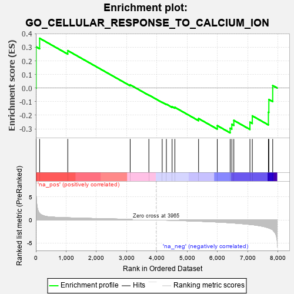
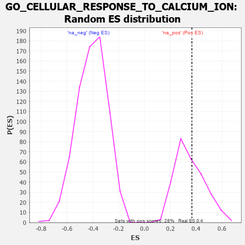

| | | Dataset | 7d |
| Phenotype | NoPhenotypeAvailable |
| Upregulated in class | na_pos |
| GeneSet | GO_CELLULAR_RESPONSE_TO_CALCIUM_ION |
| Enrichment Score (ES) | 0.36667687 |
| Normalized Enrichment Score (NES) | 1.0414395 |
| Nominal p-value | 0.39426523 |
| FDR q-value | 0.69310516 |
| FWER p-Value | 1.0 |
Table: GSEA Results Summary

Fig 1: Enrichment plot: GO_CELLULAR_RESPONSE_TO_CALCIUM_ION
Profile of the Running ES Score & Positions of GeneSet Members on the Rank Ordered List
| PROBE | GENE SYMBOL | GENE_TITLE | RANK IN GENE LIST | RANK METRIC SCORE | RUNNING ES | CORE ENRICHMENT | | 1 | SYT2 | | | 8 | 5.577 | 0.3037 | Yes |
| 2 | ADCY8 | | | 124 | 1.418 | 0.3667 | Yes |
| 3 | MEF2C | | | 1054 | 0.473 | 0.2757 | No |
| 4 | SYT8 | | | 3115 | 0.135 | 0.0241 | No |
| 5 | SYT11 | | | 3732 | 0.036 | -0.0514 | No |
| 6 | SYT12 | | | 4172 | -0.037 | -0.1046 | No |
| 7 | SYT17 | | | 4310 | -0.061 | -0.1184 | No |
| 8 | MEF2A | | | 4499 | -0.095 | -0.1369 | No |
| 9 | SYT4 | | | 4590 | -0.116 | -0.1419 | No |
| 10 | CPNE9 | | | 5374 | -0.289 | -0.2245 | No |
| 11 | SYT9 | | | 5992 | -0.469 | -0.2765 | No |
| 12 | CPNE2 | | | 6417 | -0.627 | -0.2956 | No |
| 13 | SYT15 | | | 6472 | -0.650 | -0.2669 | No |
| 14 | CPNE8 | | | 6538 | -0.680 | -0.2379 | No |
| 15 | CPNE5 | | | 7070 | -0.977 | -0.2513 | No |
| 16 | SYT1 | | | 7148 | -1.033 | -0.2046 | No |
| 17 | TRPM2 | | | 7680 | -1.712 | -0.1778 | No |
| 18 | ADCY1 | | | 7695 | -1.752 | -0.0838 | No |
| 19 | PKD2 | | | 7822 | -2.167 | 0.0187 | No |
Table: GSEA details [plain text format]

Fig 2: GO_CELLULAR_RESPONSE_TO_CALCIUM_ION: Random ES distribution
Gene set null distribution of ES for GO_CELLULAR_RESPONSE_TO_CALCIUM_ION